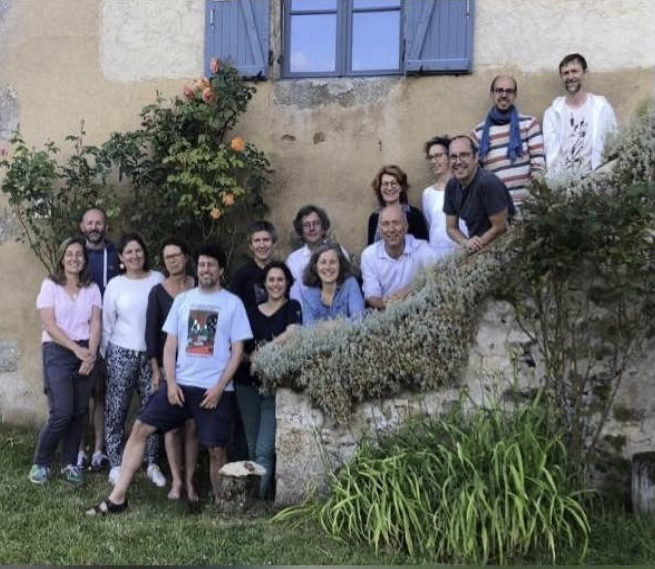

Sacré P'tit Choeur
Musique Anglaise

La musique vocale anglaise, c'est un peu comme le thé à 17h :
indispensable, raffinée, mais toujours avec une touche de singularité qui laisse les voisins européens un brin jaloux. Depuis l'époque baroque, les compositeurs anglais ont offert à la scène musicale des œuvres à la fois délicieuses et inventives.
Commençons par Henry Purcell. Ce cher Henry, avec ses joyaux a non seulement fait pleurer des générations de sopranos, mais il a aussi permis à la musique vocale anglaise de rivaliser avec celle de nos amis italiens. Ses contemporains, comme William Byrd, ont eux aussi contribué à cette tradition. Byrd, notamment, a montré que l'on pouvait être solennel et poétique tout en gardant un charme très anglais.
Passons maintenant au XVIIIe siècle avec Georg Friedrich Haendel, qui, bien que d'origine allemande, a adopté l'Angleterre comme sa maison musicale. Ses grandes œuvres vocales, telles que ses oratorios, sont devenues emblématiques du paysage anglais. Haendel a su capturer le caractère anglais tout en y ajoutant sa touche continentale, créant des pièces qui résonnent comme des hymnes nationaux avant l’heure.
Au XXe siècle, Benjamin Britten a redonné ses lettres de noblesse à la musique vocale anglaise. Il a prouvé qu’on pouvait être moderne tout en restant profondément attaché aux racines britanniques. Britten a toujours su tirer le meilleur de la voix humaine, et ses mélodies touchent autant qu'une tasse de thé chaud un jour de pluie.
Puis, viennent les années 60 avec une nouvelle vague de génies mélodiques : les Beatles. Ah, ces Fab Four, avec leurs mélodies qui s’accrochent à votre cerveau comme une chanson de pub. Ils ont montré que la musique vocale pouvait être simple, puissante, et universelle. Sans oublier Queen, qui a porté l'art de la chanson vocale à des hauteurs vertigineuses, prouvant qu’on pouvait mélanger les genres avec panache.
Ainsi, de Purcell à Queen, la musique vocale anglaise a constamment réinventé la mélodie, tout en restant profondément enracinée dans son héritage. Purcell a posé les bases d’une tradition où la voix est à la fois émotion et sophistication, tandis que Haendel, Britten, les Beatles et Queen ont chacun transformé la scène musicale avec audace et innovation, affirmant une identité musicale anglaise unique et influente.
Programme
- Ave verum corpus
- William Byrd (1539-1623)
- Weep on my mind
- William Byrd (1539-1623)
- Come again
- John Dowland (1563-1626)
- Miserere Mei de
- Henry Purcell (1659-1695)
- I was glad
- Henry Purcell (1659-1695)
- Remember not
- Henry Purcell (1659-1695)
- King Arthur Passacaille
- Henry Purcell (1659-1695)
- Come come let us drink
- Henry Purcell (1659-1695)
- Zadock the priest (piano)
- Georg Friedrich Haendel (1685-1759)
- Messiah
- Georg Friedrich Haendel (1685-1759)
- Halleluia
- Georg Friedrich Haendel (1685-1759)
- Layd a garland
- Robert Lucas Pearsall (1795-1856)
- Greensleeves
- Robert Childcott (1955)
- The sycamore tree
- Edward Benjamin Britten (1913-1976)
- And so it goes
- Robert Chilcott (1955)
- Yesterday
- Beattles
- Bohemian Rhapsody
- Queen
Edwin Baudo
pianiste, compositeur et chef de choeur

Edwin Baudo, formé au CRR de Paris, a obtenu des distinctions remarquables en piano, harmonie et analyse. Il a également décroché le premier prix d’accompagnement piano à l’unanimité en cycle de perfectionnement et une première médaille en composition au CRR de Rueil-Malmaison. Passionné par les disciplines vocales, il a étudié la direction de choeur et le chant, obtenant un DEM en direction de choeur au CRR, et détient deux diplômes d’État. Depuis 2021, il est chef de choeur titulaire PEA à la Ville de Paris, coordonnant le département voix du conservatoire du XIXe arrondissement, où il enseigne la direction de choeur et réalise de nombreux projets scéniques et théâtraux. Depuis 2014, Edwin Baudo est chef de choeur associé au Choeur d’Enfants et au Choeur de Jeunes de l’Orchestre de Paris-Philharmonie de Paris. Il collabore régulièrement avec les ensembles Sequenza 9.3 et Cappella Mediterranea pour des projets artistiques et pédagogiques. Compositeur prolifique, il a créé l’opéra « Les Mystères du Père-Lachaise », une commande du CRR d’Aubervilliers-La Courneuve en 2021, ainsi qu'un cycle sur les fables de La Fontaine en 2022. En 2024, il a reçu deux commandes : « Le Petit Vagabond » pour la Maîtrise de Radio-France, créé en juin à la Maison de la Radio et de la Musique, et « La Victoire de Karima » pour le choeur de l'Orchestre de Paris, créé en juin à la Philharmonie de Paris, une oeuvre labellisée Olympiade culturelle. Parallèlement, Edwin Baudo a reçu, pour 2025, une nouvelle commande pour un opéra destiné à la Maîtrise de Caen par le Théâtre de Caen. Cet ouvrage s’intitulera : « Pour les beaux yeux de Mathilde ou comment faire la guerre quand on est amoureux ». Edwin Baudo a une prédilection pour le répertoire vocal et opératique. Il ambitionne de développer une écriture à la fois accessible et innovante, abordant des thématiques nouvelles tout en suscitant une réflexion profonde sur les chemins de vie. Edwin Baudo est édité aux Éditions des Abbesses.
Le Sacré P'tit Choeur
L’ensemble Sacré P’tit Chœur a été fondé en 2005 par des choristes enthousiastes et unis dans une relation d’amitié́ singulière, authentique et profonde. Il réunit des chanteurs et chanteuses ayant pour objectif le plaisir de chanter et de perfectionner leur art vocal au sein d’un ensemble restreint, aux fins de partager et promouvoir des œuvres musicales de qualité́, notamment baroques.
Dirigé par Edwin Baudo, Chef de chœur titulaire des conservatoires de la ville de Paris, le chœur a pour vocation de se produire pour promouvoir la musique, ainsi que pour soutenir des œuvres caritatives et sociales, notamment en milieu rural et d’interpréter en concert en son nom propre le travail accompli durant la saison
Les chanteurs
- Soprano
- Claire Buado, Laure Lagon-Caumartin, Adeline Lerigoleur, Lorraine Nusse
- Alto
- Marie-Pierre Luton, Armelle Naudin, Marie Renoud
- Ténor
- Vivien Berbigier, Romain Dufrêne, Emmanuel Guérin, Pierre-Marie Lasbleis
- Basse
- Nivolas Aubertin, François-Xavier Brabant, Bertrand Lauga, David Llorca, Olivier Marion
Nous remercions très chaleureusement notre talentueux pianiste
Hugo Philippeau, notre chef Edwin pour son enthousiasme, pour son
professionnalisme et pour le partage de toutes ses √©motions (üòâ),
ainsi que la Maison Verte pour son accueil.
Cela fait 18 ans que SPC existe ! God Save SPC !